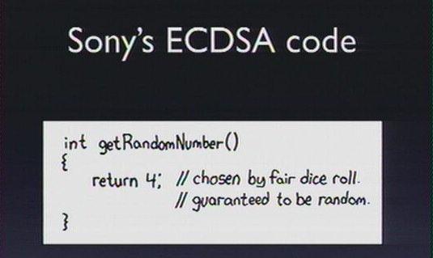

A PS3's Browser Investigation [0x01]
Prologue
Since PS3's last vulnerabilty was found by GeoHot on 3.55 Firmware, many time has passed away already without any new exploits surfacing the scene, but a while ago, I found out some people trying to adapt PS4's Webkit exploits to the PS3's Browser, and I thought, why not looking into PS3's browser just to see how it internally works?
So... Webkit or not Webkit?
Starting up with the research, I found myself into a dilemma, does the PS3 run pure Webkit (Without Sony modifications)? Or does it run some kind of different Browser Engine that is not Webkit? So i started looking into it and found that, yes, the PS3 indeed seems to be running Webkit, but a very special one. Later i'll discuss some things about it's 'specialities', but main things I 'found' were that the version they were using was a 'slimmed-down' Webkit to make sure the PS3 could handle it (It can't handle most of today's webpages without crashing or running out of memory, so they failed to make a good browser anyways).
Dissecting PS3's 'Slimmed-Webkit' Engine
From the PS3's Open Source webpage, you can download the pieces of software they used to build-up many parts of the PS3's System, so i downloaded the Webkit Engine they used for it's system and I started looking into it. From the Engine's Useragent String I got this result:
Mozilla/5.0 (PLAYSTATION 3 4.81) AppleWebKit/531.22.8 (KHTML, like Gecko)This Webkit Version was launched in between March 11, 2010 and June 7, 2010 according to Wikipedia so, it's several years out of date. I confirmed the Useragent string by looking into
MAJOR_VERSION = 531; MINOR_VERSION = 22; TINY_VERSION = 8;Webkit, the Sony Way (Again)
You may remember this section of Failoverflow's PS3 hacking presentation where Sony used a sketchy function to get a random number, and that random number was 4, allowing them to defeat PS3's ECDSA system. So, Sony did it again, it's not as bad as the random number fail, but it's something you should have on your web browsing engine just to ensure minimum memory operations. I'm talking about WebCore TypedArrays. Yes, Sony's PS3 Webkit build doesn't have support for them, which is strange anyways.
OFF-TOPIC: Learn more about TypedArrays on Saelo's Phrack Paper
TypedArrays are complex forms of Javascript Arrays that can access raw memory (Or not, it depends on which you're using), help in math operations with big numbers and things like that. In fact, WebKit TypedArrays are very similar to C integers, floats... Let's take a look on how WebKit TypedArrays do look like:
Int8Array, Uint8Array, Uint8ClampedArray, Int16Array, Uint16ArrayInt32Array, Uint32Array, Float32Array, Float64ArrayThoose TypedArrays, are usually present in most of todays Webkit bug's, so not having support for them, will end up in a...
ReferenceError: Can't find variable: Uint32Array...or...
ReferenceError: Can't find variable: Float32Array...etc...
So, automatically, things like...
var v = new Uint32Array(0x13AC)...or...
memPressure[i] = new Uint32Array(0x10000);...will result in a JavaScript Core exception, making the exploitation more difficult (But not impossible).
Going back to our main topic, PS3 WebKit build doesn't have support for this type of Webkit 'functions' so most of the exploits that use them (Which are pretty much modern, and modern stuff might not be present in the code) won't work and they will require more stuff.
Also, somewhere up in 2011-2012 Sony released the PS3's 4.10 Firmware Version which "Added" compatibility with HTML5 (Which I also doubt it's real HTML5 and not some pesky and hacky-whacky thing that provides bare-minimum functions for modern webpages to operate) and also changed a few things here and there so your PS3 wouldn't freeze while searching Cats on Google Images.
But how can we exploit PS3's WebKit engine then?
Well, that's a matter of time, you can look up on the Internet about old Webkit bugs and test if they work on the PS3, then you could craft an exploit from them. But what's the point of running unsigned code on the userland in the PS3 nowadays when Custom Firmwares are up on all the Scenes and Downgrading has become a very used technique in order to install a full-blown Custom Firmware on the PS3? Well, there are a lot of people that can't afford a downgrader, or they don't know how to solder, or they fear that they will kill the PS3 by doing thoose things... There are a lot of reasons to research on newer PS3 models, but the first one is: Doing it for fun as past hackers did it.
TL;DR
Motivated by some people that were porting PS4 WebKit exploits to PS3, found out that they can't work on the PS3 because Sony has (Again) failed to provide a good WebKit base by removing functionalities that are useful (In this case, TypedArrays) in the Webkit exploiting world.